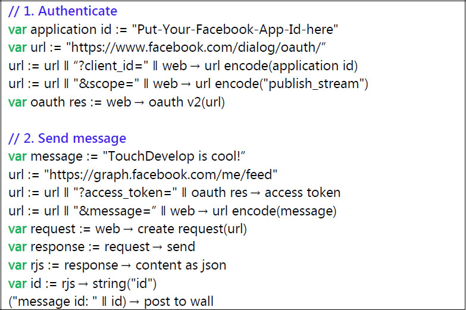
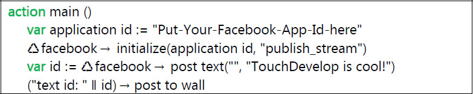

There are many web services on the internet which allow client applications to query and store all kinds of structured information. Some web services require the user to authenticate in order to use protected resources.
11.1 Registering your app
A common source of web service calls is to Facebook’s Graph API1. With this API, you can query and submit pictures, status updates, comments, and more. All interactions are done on behalf of a particular Facebook user. The user has to give permission to the application to access any part of the user’s information.
OAuth v2.0 is a common authentication mechanism for web services supported by Microsoft, Facebook, Google, and other companies. TouchDevelop supports the OAuth 2.0 Implicit Grant flow protocol as defined in section 4.2 of the specification (http://tools.ietf.org/html/rfc6749). Other protocols are not currently supported. After having negotiated an access token for a protected web services, TouchDevelop offers the ability to process and create structured data in formats such as JSON and XML.
Before you can use the OAuth mechanism to access a web service, you need to register the app you are working on with the provider of the web service. Every web service has its own registration mechanism; you must find and follow the instructions provided by the service you want to use.
Somewhere during the registration process you will be asked for a “redirect URI”. You MUST enter the following redirect URI precisely.
where [userid] is your TouchDevelop user id. This is a short letter combination such as pboj which happens to be the userid for the TouchDevelop Samples user. Point your browser at https://www.touchdevelop.com/me to find out your user id. You will be redirected to a new URL, possibly after being asked to log in. The new URL has the form https://www.touchdevelop.com/[userid].
Only TouchDevelop scripts published under your account will be able to use this redirect URI. See the later section on unique redirect URIs for instructions on how to handle the situation where the OAuth provider you want to use requires unique URIs for each application.
11.2 Authenticating
The OAuth 2.0 authentication is handled through the web→oauth v2 action. The action takes the OAuth URL including the client_id and optional scope or other arguments. Do NOT include the state and redirect_uri arguments; they are automatically added by TouchDevelop.
var
oauth res := web → oauth v2(url)
The response contains the access token or the details about the error, if any. You can then use the access token to sign each request as specified by the service.
var
access token := oauth res → access token
var
call := "http://....?access_token=" ∥ web → url encode(access token)
You can use the is expiring action to easily test if an access token is missing or (almost expired).
if oauth res → is expiring(100) then
// Oops, better ask for a new token.
else do nothing
Table 11-1
General methods related to OAuth 2.0
Method | Description |
|---|---|
web → oauth v2(oauth url : String) : OAuth Response
| Authenticate with OAuth 2.0 and receive the access token or error. |
Table 11-2
Properties of the OAuth Response type
Method | Description |
|---|---|
access token : String
| The access token issued by the authorization server. |
error : String
| A single ASCII [USASCII] error code. |
error description : String
| (Optional) A human readable error code. |
error uri : String
| (Optional) A URI identifying a human-readable web page with information about the error, used to provide the client developer with additional information about the error. |
expires in : Number
| (Optional) The lifetime in seconds of the access token. |
is error : Boolean
| Indicates if this response is an error. |
is expiring(lookup : Number) : Boolean
| (Optional) Indicates if the token might expire within the next seconds. |
is invalid : Boolean
| Returns true if the current instance is useless |
others : String Map
| (Optional) Additional key-value pairs not covered by the OAuth 2.0 specification. |
post to wall
| Displays the response. |
action scope : String
| (Optional) Optional if identical to the scope requested by the client; otherwise, the scope of the access token as described by Section 3.3 of the OAuth 2.0 specification. |
Figure 11-1 shows how to use the OAuth functionality provided by TouchDevelop in order to post a message to Facebook:
1.
It builds a URL that will trigger the Facebook authentication process for your app, for a particular “scope” which defines what kind of permissions your app is requesting.
2.
Then it sends the actual message with the text to post. Note how not only the message text is encoded in a URL, but also the access_token that was obtained by the earlier authentication call.
If you use a different web service, or want to post other kind of information, it might be the case that you need to pass the access_token in a header field of the web request, and you might have to send the payload in the body of a POST web request. Consult the documentation of the web service you want to use.

Figure 11-1
Post a message to Facebook with OAuth
11.3 Libraries
The following TouchDevelop libraries already implement the OAuth 2.0 authentication for a number of APIs. Each library contains detailed instructions on how to register an application in order to use them. Just search for the name of a library in the add-library-reference dialog.
Microsoft Live
Facebook
Google
Yammer
FourSquare
Instagram
Meetup
Figure 11-2 shows how to use the Facebook library provided by TouchDevelop in order to post a message on Facebook. Before you can use the ♻ facebook expression, you must add a reference to the Facebook library in your script.

Figure 11-2
Using Facebook Library
11.4 Advanced topics
11.4.1 Unique redirect URIs
Some OAuth providers, such as Microsoft Live, require unique redirect URIs with unique domain names for each application. In those cases the basic redirect URI that is just specific to your user id does not work. Instead, you can use the following redirect URI scheme:
https://[rdid]-[userid].users.touchdevelop.com/oauth
where [rdid] is a unique identifier for the app (“redirect domain id”, fewer than 64 lower case alphanumeric ASCII characters) that you can choose, and [userid] is your TouchDevelop user id as before.
oauth res := web → oauth v2(url ∥ "&tdredirectdomainid=[rdid]")
When passing the authentication URL to web→oauth v2, add a tdredirectdomainid query argument to specify your [rdid].
11.4.2 State variable in redirect URI
Some OAuth providers fail to pass the state argument in the redirect URI, and this breaks the TouchDevelop OAuth support. In such case, add a tdstateinredirecturi=true query argument to the authentication URL.
oauth res := web → oauth v2(url ∥ "&tdstateinredirecturi=true")